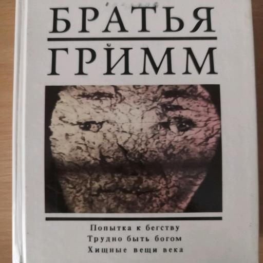

01
РЕДАКТИРОВАНИЕ ТЕКСТА НА ИЗОБРАЖЕНИЯХ
Наведите телефон на книгу или «Паруса» на постере. Надписи начнут меняться прямо на обложке.
Разрешите доступ к камере. Установка приложения не нужна.

Для первого теста можно навести телефон на постер на экране компьютера. Если камера недоступна, откройте видео выше.
Запускаем камеру…